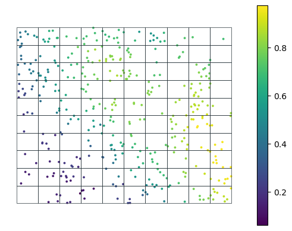
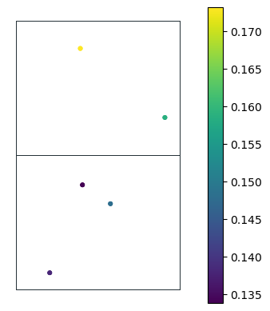

Exported source
@dataclass
class Variable:
"State variable"
name: str
value: floatVariable (name:str, value:float)
State variable
Callback ()
Initialize self. See help(type(self)) for accurate signature.
State (measurements:geopandas.geodataframe.GeoDataFrame, smp_areas:geopandas.geodataframe.GeoDataFrame, cbs:List[collections.abc.Callable])
Collect various variables/metrics per grid cell/administrative unit.
| Type | Details | |
|---|---|---|
| measurements | GeoDataFrame | Measurements data with loc_id, geometry and value columns. |
| smp_areas | GeoDataFrame | Grid of areas/polygons of interest with loc_id and geometry. |
| cbs | List | List of Callback functions returning Variables. |
class State:
def __init__(self,
measurements:gpd.GeoDataFrame, # Measurements data with `loc_id`, `geometry` and `value` columns.
smp_areas:gpd.GeoDataFrame, # Grid of areas/polygons of interest with `loc_id` and `geometry`.
cbs:List[Callable], # List of Callback functions returning `Variable`s.
):
"Collect various variables/metrics per grid cell/administrative unit."
fc.store_attr()
self.unsampled_locs = self.smp_areas.index.difference(self.measurements.index)State.get (loc_id:str, as_numpy=False)
Get the state variables as defined by cbs for a given location (loc_id).
| Type | Default | Details | |
|---|---|---|---|
| loc_id | str | Unique id of the Point feature | |
| as_numpy | bool | False | Whether or not to return a list of Variable or a tuple of numpy arrays. |
@patch
def get(self:State,
loc_id:str, # Unique id of the Point feature
as_numpy=False # Whether or not to return a list of `Variable` or a tuple of numpy arrays.
):
"Get the state variables as defined by `cbs` for a given location (`loc_id`)."
variables = self.run_cbs(loc_id)
if as_numpy:
return (np.array([v.name for v in variables]),
np.array([v.value for v in variables]))
else:
return variablesState.__call__ (loc_id=None, **kwargs)
Get the state variables as defined by cbs for all loc_ids as a dataframe.
@patch
def __call__(self:State, loc_id=None, **kwargs):
"Get the state variables as defined by `cbs` for all `loc_id`s as a dataframe."
loc_ids = self.smp_areas.index
results = [{v.name: v.value for v in self.run_cbs(loc_id)} | {'loc_id': loc_id} for loc_id in loc_ids]
return pd.DataFrame(results).set_index('loc_id')State.expand_to_k_nearest (subset_measurements:geopandas.geodataframe.Ge oDataFrame, k:int=5)
Expand measurements of concern possibly to nearest neighbors of surrounding grid cells.
| Type | Default | Details | |
|---|---|---|---|
| subset_measurements | GeoDataFrame | Measurements for which Variables are computed. | |
| k | int | 5 | Number of nearest neighbours (possibly belonging to adjacent cells/admin. units to consider). |
@patch
def expand_to_k_nearest(self:State,
subset_measurements:gpd.GeoDataFrame, # Measurements for which Variables are computed.
k:int=5, # Number of nearest neighbours (possibly belonging to adjacent cells/admin. units to consider).
):
"Expand measurements of concern possibly to nearest neighbors of surrounding grid cells."
tree = KDTree(self.measurements.geometry.apply(lambda p: (p.x, p.y)).tolist());
_, indices = tree.query(subset_measurements.geometry.apply(lambda p: (p.x, p.y)).tolist(), k=k)
return self.measurements.iloc[indices.flatten()].reset_index(drop=True)State.run_cbs (loc_id)
Run Callbacks sequentially and flatten the results if required.
MaxCB (name='Max')
Compute Maximum value of measurements at given location.
class MaxCB(Callback):
"Compute Maximum value of measurements at given location."
def __init__(self, name='Max'): fc.store_attr()
def __call__(self,
loc_id:int, # Unique id of an individual area of interest.
o:Type[State] # A State's object
):
if loc_id in o.unsampled_locs: return Variable(self.name, np.nan)
return Variable(self.name,
np.max(o.measurements.loc[[loc_id]].value.values))MinCB (name='Min')
Compute Minimum value of measurements at given location.
class MinCB(Callback):
"Compute Minimum value of measurements at given location."
def __init__(self, name='Min'): fc.store_attr()
def __call__(self,
loc_id:int, # Unique id of an individual area of interest.
o:Type[State] # A State's object
):
if loc_id in o.unsampled_locs: return Variable(self.name, np.nan)
return Variable(self.name,
np.min(o.measurements.loc[[loc_id]].value.values))StdCB (name='Standard Deviation')
Compute Standard deviation of measurements at given location.
class StdCB(Callback):
"Compute Standard deviation of measurements at given location."
def __init__(self, name='Standard Deviation'): fc.store_attr()
def __call__(self,
loc_id:int, # Unique id of an individual area of interest.
o:Type[State] # A State's object
):
if loc_id in o.unsampled_locs: return Variable(self.name, np.nan)
return Variable(self.name,
np.std(o.measurements.loc[[loc_id]].value.values))CountCB (name='Count')
Compute the number of measurements at given location.
class CountCB(Callback):
"Compute the number of measurements at given location."
def __init__(self, name='Count'): fc.store_attr()
def __call__(self,
loc_id:int, # Unique id of an individual area of interest.
o:Type[State] # A State's object
):
if loc_id in o.unsampled_locs: return Variable(self.name, np.nan)
return Variable(self.name,
len(o.measurements.loc[[loc_id]].value.values))MoranICB (k=5, p_threshold=0.05, name='Moran.I', min_n=5)
Compute Moran.I of measurements at given location. Return NaN if p_sim above threshold.
class MoranICB(Callback):
"Compute Moran.I of measurements at given location. Return NaN if p_sim above threshold."
def __init__(self, k=5, p_threshold=0.05, name='Moran.I', min_n=5): fc.store_attr()
def _weights(self, measurements):
w = weights.KNN.from_dataframe(measurements, k=self.k)
w.transform = "R" # Row-standardization
return w
def __call__(self,
loc_id:int, # Unique id of an individual area of interest.
o:Type[State] # A State's object
):
if loc_id in o.unsampled_locs: return Variable(self.name, np.nan)
subset = o.measurements.loc[[loc_id]]
if len(subset) <= self.min_n: return Variable(self.name, np.nan)
expanded_measurements = o.expand_to_k_nearest(subset, k=self.k)
moran = esda.moran.Moran(expanded_measurements['value'], self._weights(expanded_measurements))
return Variable(self.name, moran.I if moran.p_sim < self.p_threshold else np.nan)PriorCB (fname_raster:str, name:str='Prior')
Emulate a prior by taking the mean of measurement over a single grid cell.
| Type | Default | Details | |
|---|---|---|---|
| fname_raster | str | Name of raster file | |
| name | str | Prior | Name of the State variable |
class PriorCB(Callback):
"Emulate a prior by taking the mean of measurement over a single grid cell."
def __init__(self,
fname_raster:str, # Name of raster file
name:str='Prior' # Name of the State variable
):
fc.store_attr()
def __call__(self,
loc_id:int, # Unique id of an individual area of interest.
o:Type[State] # A State's object
):
polygon = o.smp_areas.loc[o.smp_areas.reset_index().loc_id == loc_id].geometry
with rasterio.open(self.fname_raster) as src:
out_image, out_transform = mask(src, polygon, crop=True)
mean_value = np.mean(out_image)
return Variable(self.name, mean_value)For example:
# Emulate data collection
dc_emulator = DataCollector(fname_raster)
samples_t0 = dc_emulator.collect(sample_locs)
ax = samples_t0.plot(column='value', s=3, legend=True)
gdf_grid.boundary.plot(color=black, lw=0.5, ax=ax)
ax.axis('off');
State and return it:state = State(samples_t0, gdf_grid, cbs=[
MaxCB(), MinCB(), StdCB(), CountCB(), MoranICB(k=5), PriorCB(fname_raster)
])
# You have to call the instance
state_t0 = state(); state_t0| Max | Min | Standard Deviation | Count | Moran.I | Prior | |
|---|---|---|---|---|---|---|
| loc_id | ||||||
| 0 | NaN | NaN | NaN | NaN | NaN | 0.102492 |
| 1 | 0.147935 | 0.133871 | 0.005889 | 3.0 | NaN | 0.125727 |
| 2 | 0.173122 | 0.158602 | 0.007260 | 2.0 | NaN | 0.161802 |
| 3 | NaN | NaN | NaN | NaN | NaN | 0.184432 |
| 4 | 0.213377 | 0.213377 | 0.000000 | 1.0 | NaN | 0.201405 |
| ... | ... | ... | ... | ... | ... | ... |
| 95 | 0.857352 | 0.838420 | 0.009466 | 2.0 | NaN | 0.803670 |
| 96 | 0.812587 | 0.812587 | 0.000000 | 1.0 | NaN | 0.763408 |
| 97 | NaN | NaN | NaN | NaN | NaN | 0.727797 |
| 98 | 0.703173 | 0.703173 | 0.000000 | 1.0 | NaN | 0.646002 |
| 99 | 0.693839 | 0.693839 | 0.000000 | 1.0 | NaN | 0.655185 |
100 rows × 6 columns
Why the expand_to_k_nearest method?
The Moran.I index is a statistical method used to determine if there is a significant spatial autocorrelation in a dataset. It helps to characterize the level of spatial correlation within each area of interest, such as a cell in your example.
However, when analyzing spatial data, it’s important to consider not just the correlation within each area, but also the correlation between areas that are close to each other. In other words, we need to take into account points that are “nearby” but “belong” to different areas.
The expand_to_k_nearest method is a technique that can help with this. It takes a list of points and expands it to include the nearest k-neighbors. This can be useful for identifying spatial patterns that might not be apparent when only considering the points within each area in isolation.
By combining the Moran.I index with the expand_to_k_nearest method, you can gain a more comprehensive understanding of the spatial patterns in your data, taking into account both the correlation within each area and the correlation between nearby areas.
The cell below allows to visualize it in action:
# Select measurements belonging to loc_id=1
subset = state.measurements.loc[[1]]; subset.head()
# Expand to k-nearest neighbors
expanded_pts = state.expand_to_k_nearest(subset, k=5)
# Look how the k-nearest neighbors from adjacent areas are now incuded
ax = expanded_pts.plot(column='value', s=10, legend=True)
gpd.sjoin(gdf_grid, expanded_pts, how="inner", predicate='contains')\
.boundary.plot(color=black, lw=0.5, ax=ax)
ax.axis('off');